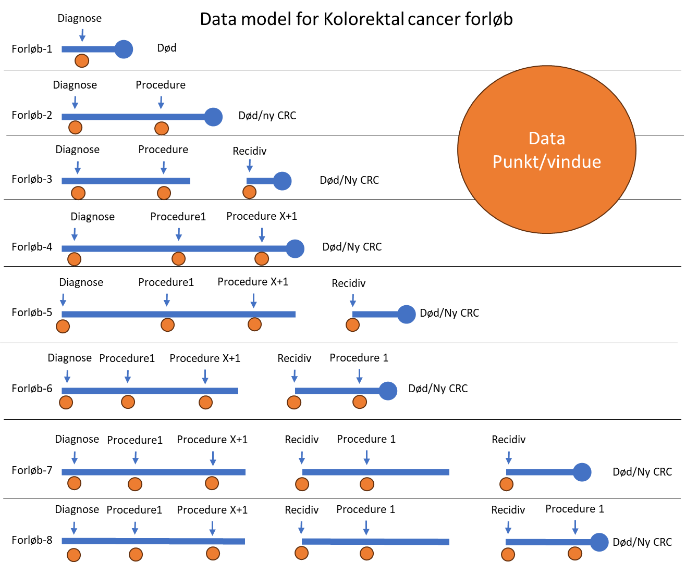

DCCG-LPR Databasemanual
Dette er databasemanualen for DCCG-LPR (Dansk Colorectal Cancer Gruppe – Landspatientregisteret).
Brug navigationen til venstre for at browse manualens afsnit.
Dataindsamling
DCCG’s database dannes af kodning via indberetninger til LPR samt PATOBANK.
Det kliniske personale anvender kodning i forbindelse med behandling af patienten, der opsamles og struktureres. Databasens population dannes ud fra registreringer i LPR og suppleres med oplysninger fra Patobank
Population
Databasens patientpopulation er afgrænset ved følgende:
Patienter med førstegangstilfælde og recidiv af cancer i kolon eller rektum, givet ved ICD-10 diagnosekoderne, C180-189 og C209.
Patienter der er 18 år eller ældre på diagnosetidspunktet.
Patienter der har bopæl i Danmark og gyldigt dansk cpr-nummer.
Der er registreret et forløb på en kirurgisk afdeling, eller patienten er behandlet af en kirurgisk afdeling under indlæggelse på anden afdeling på et offentligt sygehus.
Patienter opdeles baseret på histologisk subtype, eller manglende histologi.
Patienter med følgende histologiske subtyper opgøres samlet
Histologiske tumortyper:
- Adenokarcinom
- Lavt differentieret adenokarcinom
- Mucinøst adenokarcinom
- Signetringscelle karcinom
- Udifferentieret karcinom
- Medullært karcinom
Patienter der er klinisk diagnosticeret uden histologisk verifikation, eller har anden histologi end ovenfor opgøres i simplificeret form.
Patienter med kræft i blindtarm (DC18.1) opgøres separat i simplificeret form. Der er ikke krav om indberetning af basisinformationer eller andre variabler til DCCG-databasen for patienter med kræft i blindtarmen. Der er heller ikke krav til DCCG-patologi beskrivelse for disse.
Eksklusionskriterier
For patienter, hvor DC18.0-9 eller 20.9 er angivet i LPR med kræftpakkeforløbskoden, AFB12X1 (kræft i tyk- og endetarm: pakkeforløb slut, diagnose afkræftet), eller diagnosetillægskoden, ZDW73 (diagnosen senere afkræftet), ekskluderes. – Se afsnit senere omkring fjernelse af patienter fra LPR.
Behandling uden primær tumor
Patienter med ukendt primær cancer, hvor MDT beslutter at behandle som kolorektalcancer, indgår ikke i databasen, og skal ikke kodes med DC18.0 -> 18.9 eller 20.9. Disse kodes med diagnosekoden DC80.9 (kræft uden kendt primær).
Patientforløbsregistrering/Data punkter
DCCG’s database opsamler viden omkring hele patientens forløb. Der defineres datapunkter – primært omkring diagnosetidspunktet, ved resektioner/endoskopiske procedure, onkologisk behandling samt kontrol da disse har kvalitetsmæssig fokus. Nedenstående figur viser forskellige forløb som en kolorektalcancerpatient kan have samt de datapunkter hvor DCCG opsamler data.

Mangellister & Data-mangellister
Mangellister
Der dannes kun mangellister genereret fra patienter, der findes i patobank med kolorektal patologi, hvor der ikke er indberettet cancerdiagnose i LPR
Data mangellister
For at sikre høj dækningsgrad af databasen produceres data-mangellister. Disse datamangel lister gøres tilgængelige for den indrapporterende afdeling. På sigt oprettes som supplerende indikatorer, således at det er muligt at få hurtig tilbagemelding på ikke komplette data.
Listerne baseres på om patienten i forbindelse med en DCCG-procedure har fået tilknyttet en behandlingsintentionskode/proceduresigte. Såfremt behandlingsintention er tilknyttet, tolkes resterende ikke-registrerede felter, hvor “ukendt” ikke er en mulighed, som verificeret ukendt. Ved manglende behandlingsintention tolkes samtlige ikke-registrerede variabler som “ikke udfyldt”.
Registrering ved multiple værdier
Hvis der i LPR optræder flere værdier af en variabel, vil databasen som udgangspunkt opfatte den værdi, der ligger tættest på proceduren, som den behandlingsbestemmende og inkludere denne. Data vil forsat være tilgængelige via LPR såfremt, man senere vil anvende disse til at beskrive detaljer i et patientforløb.
Fjernelse af patienter fra databasen – fejlagtig indberetning i LPR
Vestdanmark (Systematic EPJ)
Der vælges diagnosen i diagnosebilledet, der vælges herefter kontekst menu (Højre klik) og der vælges “Senere afkræftet”
Østdanmark (Sundhedsplatformen)
Der tilknyttes ”`ZDW73” til diagnosen I diagnoseoverblikket.
Synkrone og Metakrone cancer
Databasen understøtter synkrone og metakrone cancere.
Synkrone cancere registres som beskrevet under basisinformationer.
Med synkrone menes en tumor der behandles på samme sygdomsforløb, og hvor behandlingsstrategien er samlet for disse.
For metakrone cancere oprettes nyt sygdomsforløb og canceren behandles som “ny” med fuld registrering.
Ved ny tumor i samme segment, som f.eks. segment hvor der tidligere er foretaget polypektomi, besluttes lokalt om det drejer sig om recidiv (samme forløb + recidiv kode) eller ny cancer (nyt forløb).
Se sektion omkring recidiv for registrering.
Helbredsforløb
Alle behandlinger tilknyttes patientens helbredsforløb. Disse består af alle kontakter under cancerdiagnosekoden på samtlige afdelinger. Forløbet er ikke tilknyttet en enkelt afdeling men den samlede diagnose. Når patienten ophører med behandling og/eller kontrol er det vigtigt at dette forløb afsluttes. Databasen vil herefter opfatte nye forløb som en ny cancer, såfremt det ikke fremgår af kodning at der er tale om recidiv (se senere).
Patienter der ikke modtager behandling eller ikke følges, med kontroller bør have deres forløb afsluttet. Patienter med åbne forløb uden evt. Kontrol skanninger vil fremgå som manglende hvis forløb ikke er afsluttet. Hvis forløb er afsluttet vil evt. Kontrol skanninger foretaget på andet forløb ikke opfattes som relateret til patientens kolorektalcancerforløb.
Dataansvar
Ansvaret for udfyldelse af basisinformationer påhviler den udredende afdeling. For patienter, der ikke har fået foretaget regelret udredning, tildeles ansvaret patientens lokale kolorektal-kirurgiske afdeling.
Basisinformationer
Disse koder indsamles i forbindelse med initial diagnostik af en kolorektalcancerpatient. Følger normal resultatindberetning for cancer diagnoser (indberetning til cancerregisteret).
Cancer Anmeldelse (TNM)
stadieindberetningen følger kravene til indberetning til cancerregisteret*.
Databasen anvender både cTNM og pTNM. pTNM opsamles fra PATOBANK.
Vær opmærksom på at DCCG-databasen anvender subgrupper af cT stadiet mhp. at undgå dobbelt registrering (se afsnit for dette)
Lokalisationskode
Tumor lokalisation kodes efter bedste endoskopiske og/eller billeddiagnostiske skøn.
Uspecifik lokalisation (DC18.9) bør ikke anvendes, da databasen dermed mister muligheden for at skelne mellem flere synkrone eller metakrone cancere. Optræder denne i sammenhæng med mere specifik kodning, vil specifik kodning have højere prioritet.
Databasen vil som udgangspunkt anvende den DC kode der er anvendt til stadieinddeling.
DC18.9 må gerne anvendes i henvisninger etc, da databasen ikke indsamler dette. Denne nomenklatur er at foretrække end en “forkert” anatomisk kodning.
Synkrone tumorer
Ved synkrone tumorer kodes alle lokalisationer. Befinder der sig flere tumorer i samme segment, kodes disse som én lokalisation og data indhentes fra Patobank.
Ved evt. senere behandling/recidiv anvendes den lokalisation, der vurderes som udløsende for behandling.
|
*(10.4.2.4.1 Krav til angivelse af TNM-stadie)
Klinisk T kategori
T kategori tilføjes i forbindelse med diagnosen.
cTx klassifikation benyttes kun, når der ikke foreligger nogen undersøgelser på patienten. Er tumor ikke synlig på billeddannelse men ved skopi, anvendes mindste T kategori. Se gerne TNM vejledning på dccg.dk
Underklassifikation af T3 & T4 stadier bør anvendes, da dette erstatter separat variable for nedvækstdybde.
Databasen anvender ikke neo-adjuverende T kategori (ycT)
Foreligger cTNM først efter en procedure, hvor der endnu ikke har været erkendt cancer f.eks. akut operation eller endoskopisk fjernelse af polyp. cTNM-koder kan tilføjes i forbindelse med aktivitet, hvor cancer senere konstateres.
Ved fund af metastaser hvor primær tumor ikke kan findes, men histologisk profil tyder på udgangspunkt i nedre GI, kodes som ukendt primær tumor (DC80.0). Disse patienter indgår ikke i databasen.
|
Klinisk N kategori
N kategori tilføjes i forbindelse med diagnosen.
cNx klassifikation benyttes kun, når der ikke foreligger nogen undersøgelser på patient.
Se TNM vejledning på dccg.dk
|
Klinisk M kategori
M kategori tilføjes i forbindelse med diagnosen.
cMx klassifikation eksisterer ikke.
Organ specifikke lokalisationskoder for metastaser angives som tillægskode til cancerkoden.
TNM indsamles i forbindelse med indrapportering til cancerregistret
|
MDT-konference
DCCG-databasen indsamler/anvender koder for
- Behandlingsbesluttende MDT
- Postoperativ opfølgnings MDT
- National MDT.
For at koderne skal anvendes, skal betingelserne under beskrivelsen være opfyldt.
Der kan afholdes flere behandlingsbesluttende MDT’er i et patientforløb.
Der bør kun optræde en behandlingsbesluttende MDT forud for en DCCG-procedure, men hvis klinisk relevant kan flere anvendes.
Yderligere behandlingsbesluttende MDT’er må gerne kodes ved behandlingsintentions-skifte eller ændringer i planlagte procedurer.
|
Patient oplysninger
Performance Status
Performance status (ECOG) oplyses som den, der danner grundlag for behandlingsbeslutningen.
Der bør ikke foretages vurdering ud fra journal gennemgang. Her bør anvendes performance status ukendt. Hvis der i databasen/LPR findes flere værdier vælges sidste inden proceduren.
| Vurdering [P] | Procedurekode | Kommentar |
|---|---|---|
| Performance Status 0 | ZZV020U0 | |
| Performance Status 1 | ZZV020U1 | |
| Performance Status 2 | ZZV020U2 | |
| Performance Status 3 | ZZV020U3 | |
| Performance Status 4 | ZZV020U4 | |
| Performance Status 5 | ZZV020U5 | Død |
| Performance Status ukendt | ZZV020U9 | Oplysning ikke tilgængelig i journal |
ASA-klassifikation
ASA-score oplyses som den, der danner grundlag for behandlingsbeslutningen. Der bør ikke foretages vurdering iht. journalvurdering. Her bør anvendes ASA ukendt. Patienter der ikke får foretaget resektion skal også have indrapporteret ASA, da grundet til fravalg af resektion kan være for høj score (forklarende variabel).
Det foretrækkes at ASA registreres på procedurekoden i forbindelse med vurdering af patient – dvs. tilknyttes operation eller anden kontrolbesøg/indlæggelse
Ved flere opgivne vælges sidste inden proceduren
| Vurdering [ikke-P] | Tillægskode | Kommentar |
|---|---|---|
| ASA funktionsniveau, ASA 1 | EZA1 | |
| ASA funktionsniveau, ASA 2 | EZA2 | |
| ASA funktionsniveau, ASA 3 | EZA3 | |
| ASA funktionsniveau, ASA 4 | EZA4 | |
| ASA funktionsniveau, ASA 5 | EZA5 | |
| ASA funktionsniveau, ASA 6 | EZA6 | |
| ASA funktionsniveau, ASA Ukendt (9) | EZA9 | Oplysning ikke tilgængelig i journal |
Alkohol indtag
Enkelt eller begge kan anvendes
| Alkoholforbrug | diagnosekode | Kommentar |
|---|---|---|
| Alkohol >10 genstande ugentligt | DZ721C | |
| Alkoholindtag overskrider 4 genstande dagligt | DZ721D |
Tobak anvendelse
| Nuværende rygestatus [P] | Pseudo- procedurekode | Kommentar |
|---|---|---|
| Ryger | ZZP01A1A | Ryger (Inden for seneste 8 uger) |
| Tidligere ryger | ZZP01A1B2 | Ikke røget de seneste 8 uger |
| Aldrig ryger | ZZP01A1B3 | Ingen eller minimalt tidligere forbrug |
| Rygestopper | ZZP01A1B1 | Anvendes ikke |
Højde & Vægt
| Patientens højde og vægt[P] | Pseudo-procedurekode | Kommentar |
|---|---|---|
| Legemshøjde (cm) | ZZ0241+ VPH#### | I tillægskoden angives højden i cm. |
| Legemsvægt (kg) | ZZ0240+ VPH#### | I tillægskoden angives vægten i kg. |
Rektum Cancer – Specifikke koder
Disse koder kan ved manglende patologisk verifikation inden operation tilføjes patienter med diagnosekoden DC20.9. efter operation
Højde på rektumtumor – bestemt ved rektoskopi
Husk at kode rektoskopi som procedure i LPR
| Pseudo-procedurekoder [P] | |
|---|---|
| Rectum Tumor Højde + bestemt ved Rectoskop | ZZV009A1A+ VPH#### |
Højde på rectumtumor – MR
| Pseudo-procedurekoder [P] | |
|---|---|
| Rectum Tumor Højde + bestemt ved MR | ZZV009A1B+ VPH#### |
Højde på rectumtumor – ukendt (både MR og rectoskopi)
| Pseudo-procedurekoder [P] | |
|---|---|
| Rectum Tumor Højde/størrelse ukendt | ZZV009A9 |
Anvendes hvis der hverken foreligger rektoskopi eller MR. Ikke udfyldt værdi for disse uden udfyldt ukendt kode tolkes som manglende indtastning.
Nedvækst af rectumtumor – MR
| Pseudo-procedurekoder [P] | |
|---|---|
| Tumor nedvækst under tunica muscularis (mm) + VPH | ZZV009A2+ VPH#### |
EMVI rectumtumor – MR
| Tillægskoder til diagnosekoder [P] | |
|---|---|
| Veneinvasion påvist ved MR-skanning | ZDW58B1 |
Korteste afstand mellem cancervæv og den mesorektale fascie
Defineres som mm. Der skelnes ikke mellem tumor, suspekt lymfeknuder eller tumordeposit (mm).
| Tillægskoder til diagnosekoder [P] | |
|---|---|
| Afstand til mesorektale fascie <= 1 mm | ZDW61D1 |
| Afstand til mesorektale fascie > 1 mm | ZDW61D2 |
| afstand til mesorektale fascie ukendt | ZDW61D9 |
Hjælpesektion for basis informationer
DCCG anvender også disse koder i basis oplysninger
Komorbiditets-Registrering
Husk at kontrollere at patientens komorbiditet og andre tilstande og procedurer er registreret.
Udvalgte nedenstående med speciel opmærksomhed for DCCG.
| Anæmi [P] | Bi-diagnosekode | Kommentar |
|---|---|---|
| Jernmangelanæmi UNS | DD509 | Se DCCG retningslinjer. |
| Anæmi UNS | DD649 |
Cancer specifikke Procedurer
| Behandling, f.eks. tilskud af jern [P] | Procedurekode |
|---|---|
| Behandling med peroral jernpræparat | BOHC10 |
| Behandling med parenteralt jern | BOHC12 |
Familieanamnese med kræft i fordøjelsesorganer
| Familiær kræft i fordøjelsesorganer[P] | Diagnosekode | Kommentar |
|---|---|---|
| Familieanamnese med kræft i fordøjelsesorganer | DZ800 | Se tværfaglige/DCCG-retningslinjer. |
Kodning ved Kirurgiske Procedurer på kolorektalcancerpatienter
Proceduresigte ved det kirurgiske indgreb
Proceduresigtet defineres som den endelige intention bag proceduren.
Den er ikke nødvendigvis bestemt forud for en procedure. Dvs. en planlagt kurativ procedure, der slutteligt (umiddelbart efter proceduren er udført) er palliativ, skal kodes som palliativ. Koden skal ikke ændres senere hvis der meget senere ændres intention.
Eksempel: en operation vurderes at kunne udføres med kurativt sigte på MDT, desværre under operation findes udbredt karcinose. Man vælger dog at foretage resektion af primær tumor. Her er koden palliativ.
Bridge-to-surgery indgreb: Stent anlæggelser eller stomianlæggelser i hvor der senere påtænkes at der skal udføres et kurativt indgreb/behandling intentions kodes som kurativ.
| Procedurens intention [P] | Tillægskode til procedurekode |
|---|---|
| Diagnostisk | ZPZA01 |
| Intenderet kurativ behandling | ZPZA02C |
| Palliativ | ZPZA05 |
Prioritet
En akut operation defineres som en procedure, der ikke kan afvente regelret udredningsprogram. Dette kan være på forløb der er akutte eller elektive. Det er operatørens vurdering der gælder.
|
|---|
Ved akut operation anføres tilstande, der fører til den akutte indikation som bi-diagnoser f.eks. ileus, perforation etc.
Konvertering
Der er foretaget konvertering hvis et indgreb var intenderet laparoskopisk og anden minimal invasiv kirurgi, men grundet tekniske eller intraoperative komplikationer må konverteres til åben kirurgi.
| Konvertering af indgrebstype [non-P] | Tillægskode til procedurekode | |
|---|---|---|
| Anden konvertering til åbent indgreb | KZYK96 | Anvendes i alle tilfælde |
Robot assisteret
Hvis et indgreb har involveret anvendelse af robot, uafhængig af tid.
| Anvendelse af robot [non-P] | Tillægskode til procedurekode | |
|---|---|---|
| Robot assisteret | KZXX00 | Anvendes i alle tilfælde |
Resektionstype
Se vejledning på DCCG.dk, her også tolkning ift. definition for CME-kirurgi.
| Resektionstype | Tillægskode |
|---|---|
| D0: ukomplet excision af tumornære lymfeknuder | KZLG00D0 |
| D1: komplet excision af tumornære lymfeknuder | KZLG00D1 |
| D2: komplet excision af tumornære lymfeknuder og intermediære lymfeknuder | KZLG00D2 |
| D3: komplet excision af tumornære lymfeknuder og alle regionale lymfeknuder | KZLG00D3 |
| D9: ingen oplysninger om excision af tumornære lymfeknuder | KZLG00D9 |
Hjælpesektion for kirurgiske procedurer
DCCG-procedure:
Proceduren kodes efter hvilken endelig procedure, der er udført og ikke den planlagte.
Procedure beskrevet på DCCG.dk
Kolon resektioner
| Kolon resektioner | Procedure | |
|---|---|---|
| Ileocækal resektion | KJFB20 | |
| Højresidig hemikolektomi | KJFB30 | |
| Udvidet højresidig hemikolektomi | KJFB30A | |
| Subtotal kolektomi | KJFB30B | |
| Anden samtidig resektion af tyndtarm og tyktarm | KJFB33 | |
| Resektion af colon transversum | KJFB40 | |
| Venstresidig hemikolektomi | KJFB43 | |
| Resektion af colon sigmoideum | KJFB46 | |
| Resektion af colon sigmoideum med kolostomi | KJFB60 | |
| Resektion af venstre fleksur | KJFB53 | |
| Udvidet venstresidig hemikolektomi | KJFB56 | |
| Anden colonresektion | KJFB50 | |
| Anden tyktarmsresektion med kolostomi og distal lukning | KJFB63 | |
| Kolektomi og ileorektostomi | KJFH00 | |
| Kolektomi og ileostomi | KJFH10 | |
| Proktokolektomi og ileostomi | KJFH20 | |
| Transluminal endoskopisk assisteret laparoskopisk excision af patologisk væv i tyktarm (CELS) | KJFA87 | |
| Laparoskopisk ileocækal resektion | KJFB21 | |
| Laparoskopisk højresidig hemikolektomi | KJFB31 | |
| Laparoskopisk udvidet højresidig hemikolektomi | KJFB31A | |
| Laparoskopisk subtotal kolektomi | KJFB31B | |
| Anden laparoskopisk samtidig resektion af tyndtarm og tyktarm | KJFB34 | |
| Laparoskopisk resektion af colon transversum | KJFB41 | |
| Laparoskopisk venstresidig hemikolektomi | KJFB44 | |
| Laparoskopisk resektion af colon sigmoideum | KJFB47 | |
| Laparoskopisk resektion af colon sigmoideum med kolostomi og distal lukning | KJFB61 | |
| Laparoskopisk resektion af venstre fleksur | KJFB54 | |
| Laparoskopisk udvidet venstresidig hemikolektomi | KJFB57 | |
| Anden laparoskopisk colonresektion | KJFB51 | |
| Anden laparoskopisk colonresektion med kolostomi og distal lukning | KJFB64 | |
| Laparoskopisk kolektomi og ileorektostomi | KJFH01 | |
| Laparoskopisk kolektomi og ileostomi | KJFH11 | |
| Laparoskopisk proktokolektomi og ileostomi | KJFH21 | |
| Laparoskopisk assisteret transluminal endoskopisk excision af patologisk væv i tyktarm (CELS) | KJFA88 | |
Endetarm resektioner
Procedure defineret iht. DCCG.dk
| Endetarmresektioner | Procedure | Type |
|---|---|---|
| Resektion af endetarm | KJGB00 | Åben |
| Resektion af endetarm med kolostomi | KJGB10 | Åben |
| Abdominal og ischioanal excision af endetarm | KJGB35 | Åben |
| Abdominal og ekstralevatorisk excision af endetarm | KJGB36 | Åben |
| Abdominal og perineal excision af endetarm | KJGB30 | Åben |
| Abdominal og intersphincterisk excision af endetarm | KJGB32 | Åben |
| Abdominal og transanal resektion af endetarm | KJGB06 | Åben |
| Proktokolektomi og ileostomi | KJFH20 | Åben |
| Total bækkenrømning | KLCE20 | Åben |
| Laparoskopisk resektion af endetarm | KJGB01 | Skopi |
| Laparoskopisk resektion af endetarm med kolostomi | KJGB11 | Skopi |
| Laparoskopisk og ischioanal excision af endetarm | KJGB37 | Skopi |
| Laparoskopisk og ekstralevatorisk excision af endetarm | KJGB34 | Skopi |
| Laparoskopisk og perineal excision af endetarm | KJGB31 | Skopi |
| Laparoskopisk og intersphincterisk excision af endetarm | KJGB33 | Skopi |
| Laparoskopisk og transanal resektion af endetarm | KJGB04 | Skopi |
| Laparoskopisk proktokolektomi og ileostomi | KJFH21 | Skopi |
| Laparoskopisk transperineal excision af endetarm | KJGB31B | Skopi |
Palliative/Bridge to surgery procedurer
| Palliative/Bridge to surgery procedurer | Procedure | Type |
|---|---|---|
| Endoskopisk indsættelse af stent i tyktarm | KJFA68 | Skopi |
| Rektoskopisk indsættelse af stent i endetarm | KJGA58A | Skopi |
| Loop enterostomi | KJFF10 | åben |
| Laparoskopisk loop enterostomi | KJFF11 | Skopi |
| Terminal enterostomi | KJFF13 | Åben |
| Transversostomi | KJFF23 | Åben |
| Laparoskopisk transversostomi | KJFF24 | Skopi |
| Sigmoideostomi | KJFF26 | Åben |
| Laparoskopisk sigmoideostomi | KJFF27 | Skopi |
| Ileotransversostomi | KJFC10 |
Andre procedurer
| Andre procedurer | Procedure | Type |
|---|---|---|
| Eksplorativ laparotomi | KJAH00 | åben |
| laparoskopi | KJAH01 | skopi |
Supplerende resektioner
Her skelnes mellem resektioner af organer, hvor der er involvering af erkendt patologisk væv, eller resektion af områder, hvor der enten er indvækst eller ikke erkendt involvering. (jf. de to afsnit omkring per-operative supplerende resektioner vs. supplerende excisioner/destruktioner af patologisk væv)
Per-operative supplerende resektioner
| Per-operative supplerende resektioner [P] | Procedurekode | Note |
|---|---|---|
| Supracolisk omentektomi | KJAL30B | Ved fjernelse af gastrokoliske ligament |
| Infracoliske omentektomi | KJAL30A | Typisk ved udv. hø. hemikolektomi |
| Radikal excision af iliakale lymfeknuder | KPJD54 | Anvendes ved resektion af laterale lymfeknuder |
| Laparoskopisk radikal excision af iliakale lymfeknuder | KPJD74 | Anvendes ved resektion af kompartment på bækkenvæg |
| Anden excision af pancreas | KJLC96 | |
| Anden operation på tyndtarm eller tyktarm | KJFW96 | |
| Enkeltsidig salpingo-ooforektomi | KLAF00 | |
| Laparoskopisk enkeltsidig salpingo-ooforektomi | KLAF01 | |
| Dobbeltsidig salpingo-ooforektomi | KLAF10 | |
| Laparoskopisk dobbeltsidig salpingo-ooforektomi | KLAF11 | |
| Andre operationer på brystvæg, pleura og diafragma | KGAW* | Alle undertyper |
| Resektion af milt | KJMA00 | |
| Anden resektion eller vævsdestruktion i urinblæren | KKCD96 |
Supplerende excision/destruktion af patologisk væv
| Supplerende excision/destruktion af patologisk væv | Procedurekode |
|---|---|
| Destruktion af patologisk væv i lever | KJJA43 |
| Radiofrekvensablation (RFA) af patologisk væv i lever | KJJA43A |
| Mikrobølgeablation (MWA) af patologisk væv i lever | KJJA43B |
| Excision af patologisk væv i lever | KJJA40 |
| Laparoskopisk excision af patologisk væv i lever | KJJA41 |
| Excision af patologisk væv i binyre | KBCA20 |
| Excision af patologisk væv i bugvæg | KJAA10 |
| Laparoskopisk biopsi eller excision af patologisk væv i diafragma | KJBA11 |
| Excision af retroperitonealt patologisk væv | KKKB10 |
| Anden excision eller destruktion af patologisk væv i ovarie | KLAC96 |
| Anden laparoskopisk excision eller destruktion af patologisk væv i ovarie | KLAC97 |
| Excision eller destruktion af patologisk væv i bughinde | KJAL20 |
| Laparoskopisk excision eller destruktion af patologisk væv i bughinde | KJAL21 |
Per-operativt fund af metastatisk sygdom
Kodes overordnet iht. gældende vejledning, dvs. kodes med lokalisering af metastase som bi-diagnose, skal tilføjes forløb, ikke nødvendigvis i forbindelse med procedure. Per-operative supplerende resektioner, kodes som procedurer iht. SKS.
Endoskopiske indgreb
Endoskopiske indgreb kan foretages før eller efter der foreligger en diagnose.
Hvis diagnose ikke foreligger (f.eks. fund i polyp) skal behandlingsintention påføres retroaktivt.
Behandlingsbesluttende MDT kan afholdes efter en procedure i dette tilfælde, hvis der ikke foretages yderligere.
Der skal også indberettes basis informationer på patienter, der udelukkende er endoskopisk behandlet. Disse kan tilføjes til kontakter efter proceduren.
For procedure, hvor der tilstøder komplikationer, skal disse kodes iht. LPR koder nedenfor.
Intentions kodning
For planlagte procedure efter behandlingsbesluttende MDT skal der påføres intention samt nødvendige koder for at beskrive forløb ift. komplikationer, reoperationer osv. (se resektioner)
Anvender samme princip som kirurgiske resektion
Hjælpeliste over endoskopiske procedurer
| Endoskopiske indgreb | Procedurekoder [P] | Kommentarer |
|---|---|---|
| Endoskopisk polypektomi i tyktarm | KJFA15 | |
| Rektoskopisk polypektomi i endetarm | KJGA05 | |
| Transanal excision af patologisk væv i endetarm | KJGA73 | |
| Rektoskopisk mikrokirugisk excision af patologisk væv i endetarm | KJGA75 | TEM/TEO/TAMIS |
| Endoskopisk mucosa resektion (EMR), endetarm | KJGA52A | |
| Endoskopisk submucøs dissektion (ESD), endetarm | KJGA52B | |
| Endoskopisk mucosa resektion (EMR), tyktarm | KJFA55A | |
| Endoskopisk submucøs dissektion (ESD), tyktarm | KJFA55B | |
| Transluminal endoskopisk assisteret laparoskopisk excision af patologisk væv i tyktarm (CELS) | KJFA87 | tillægskoder til resektion |
| Laparoskopisk assisteret transluminal endoskopisk excision af patologisk væv i tyktarm (CELS) | KJFA88 | tillægskoder til resektion |
Komplikationsregistrering
Komplikationer opgøres per kontakt (indlæggelse).
Der foretages en samlet opgørelse fra proceduren til udskrivelse/afslutning af kontakt.
Samtlige komplikationer tilføjes via SKS koder (se eksempler i tabel).
Ved et forløb der er vurderet uden komplikationer, er det vigtigt at tilføje koden “Ingen komplikationer” se nedenfor.
Ved anastomoselæk og evt. reoperation påføres disse koder også – se senere.
Hvis der har været komplikationer, kan den højeste kategori af komplikation under indlæggelsen angives via Clavien-Dindo.
Hvis et forløb ikke er angivet som “ingen komplikationer” eller har en Clavien-Dindo gradering, angives komplikationsregistreringen som ikke udført. Dette vil som nævnt i indledning være en supplerende indikator mhp. at danne mangellister
Komplikationsfrit indgreb
Et ukompliceret forløb - defineret som ingen medicinske eller kirurgiske komplikationer kodes med VV00051. Koden registres som tillægskode til aktionsdiagnosen.
| Komplikationsfrit indgreb[P] | Tillægskode til aktionsdiagnosen |
|---|---|
| Ingen komplikationer | VV00051 |
Komplikationer
Komplikationer der opstår under indlæggelses kontakten/operationen
Per-operative komplikationer samt post-operative komplikationer registreres som bi-diagnoser til aktionsdiagnosen med tillægskode for grad.
Komplikationer der opstår efter udskrivelse efter primære operation
Registreres som aktionsdiagnose på genindlæggelse/ ambulant besøg. Der tilføjes tillægskode for grad (Clavien Dindo).
Gradering af komplikationer
Hvis der er komplikationer, vurderes det samlede forløb ift. Clavien-Dindo kategorier
I DCCG-sammenhæng inkluderer dette medicinske og kirurgiske komplikationer.
Det er den værste komplikation som bestemmer graden.
Clavien-Dindo
Clavien-dindo kodes på udskrivelsestidspunktet. Man kan kun indberette én.
| Grad | Tillægskode til diagnosekode for komplikation[p] | Beskrivelse |
|---|---|---|
| Grad 1 | ZDA03A1 | Enhver afvigelse fra det normale postoperative forløb uden kirurgisk, endoskopisk, radiologisk eller farmakologisk intervention med undtagelse af væskebehandling, behandling med antiemetika, febernedsættende medicin, smertestillende medicin eller diuretika og fysioterapi. Omfatter sårspaltning bed-side og hjerteinsufficiens som udelukkende behandles med diuretika. |
| Grad 2 | ZDA03A2 | Medicinsk behandling inkl. blodtransfusion eller parenteral ernæring, men eksklusiv væskebehandling og behandling med antiemetika, febernedsættende medicin, smertestillende medicin eller diuretika. |
| Grad 3a | ZDA03A3A | Komplikation som er behandlet kirurgisk, endoskopisk eller radiologisk (perkutan drænage) behandling uden narkose, men inkl. eventuel rus. |
| Grad 3b | ZDA03A3B | Komplikation som er behandlet kirurgisk, endoskopisk eller radiologisk (perkutan drænage) behandling i narkose ekskl. rus. |
| Grad 4a | ZDA03A4A | Livstruende komplikation (inkl. CNS) som krævede indlæggelse på en intensiv afdeling, med svigt af et organ (inkl. dialyse). |
| Grad 4b | ZDA03A4B | Livstruende komplikation (inkl. CNS) som krævede indlæggelse på en intensiv afdeling med multiorgansvigt. |
| Grad 5 | ZDA03A5 | Død. |
Hjælpesektion for kirurgiske komplikationer
Dette er hjælpelister mhp. at anvende og ensrette kodning.
Per-operative komplikationer
Per-operative komplikationer kodes som bidiagnoser (se ovenfor)
| Per-operativ komplikation [P] | Diagnosekode | Kommentar |
|---|---|---|
| Per-operativ blødning | DT818F | >500 ml. |
| Utilsigtet peroperativ punktur eller læsion IKA | DT812 | |
| Utilsigtet peroperativ læsion IKA | DT812A | Anvend 812 |
| Utilsigtet peroperativ punktur IKA | DT812B | Anvend 812 |
| Utilsigtet peroperativ punktur eller læsion af gastrointestinalkanalen | DT812G | |
| Utilsigtet peroperativ punktur eller læsion af kvindeligt kønsorgan | DT812H | |
| Utilsigtet peroperativ perforation af uterus ved resektion | DT812H1 | |
| Utilsigtet peroperativ punktur eller læsion af kar eller lymfesystem | DT812K | |
| Utilsigtet peroperativ læsion af nerve | DT812N | |
| Utilsigtet peroperativ punktur eller læsion af urinveje | DT812U | |
| Utilsigtet peroperativ punktur eller læsion af nyre | DT812UA | |
| Utilsigtet peroperativ punktur eller læsion af nyrebækken | DT812UB | |
| Utilsigtet peroperativ punktur eller læsion af urinleder | DT812UC | |
| Utilsigtet peroperativ punktur eller læsion af urinblære | DT812UD | |
| Utilsigtet peroperativ læsion af organ med samtidig intervention | DT812V | |
| Utilsigtet peroperativ læsion af organ uden samtidig intervention | DT812W | |
| Fremmedlegeme utilsigtet efterladt i operationsfelt | DT815 |
Ved Ikke klassificeret koder (IKA) kan der tilknyttes anatomisk lokalisation fx T000132 = milt
Postoperative komplikationer
Opstår/ erkendes komplikationen på kontakten, hvor det kirurgiske indgreb er foretaget, registreres komplikationen som bidiagnose.
Hvis patienten genindlægges pga. komplikation, registreres komplikationen som aktionsdiagnose på genindlæggelsen.
| Postoperativ komplikation | Diagnosekode | Kommentar |
|---|---|---|
| Post-operativ blødning | DT810G | |
| Dyb bristning af op. sår | DT813D | Fascieruptur |
| Post-op sår infektion | DT814F | |
| Post-op intraabd abscess | DT814b | |
| Post-op Stomi komplikation | DK914D | Dækker prolaps, separation, retraktion, og infektion som så kodes med denne og ovenstående infektionskoder |
| Post-op Stomi nekrose | DK914C | Vil medføre re-operation |
| Postoperativ tarmobstruktion | DK913 | Anvendes post operativ og ikke DK567. Denne anvendes kun ved primær symptom. |
Anastomose komplikationer
Opstår/ erkendes komplikationen på kontakten, hvor det kirurgiske indgreb er foretaget, registreres komplikationen som bidiagnose.
Hvis patienten genindlægges pga. komplikation, registreres komplikationen som aktionsdiagnose på genindlæggelsen.
Anastomose lækager kodes iht nedenstående. Kræver et læk re-operation, skal der kodes ifølge nedenstående. Der kodes for evt. stomi og supplerende resektioner – hvis foretaget.
Avital tarm i anastomose området kodes som anastomose læk/re-operation
Anastomoselæk
| Anastomoselækage | Tillægskoder til procedurekoder |
|---|---|
| Anastomoselækage, type A | ZDA03BA |
| Anastomoselækage, type B | ZDA03BB |
| Anastomoselækage, type C | ZDA03BC |
Anastomose re-operation
| Re-operation | Procedurekoder [P] |
|---|---|
| Re-operation for sutur/anastomose insuff efter Gas operation | KJWF00 (åben) |
| Re-operation for sutur/anastomose insuff efter Gas operation | KJWF01(lap) |
Tillægskoder til re-operation for anastomose læk
| Tillægskode til re-operation | Tillægskoder til procedurekoder |
|---|---|
| Anastomose lækage, anastomose bevaret | DT813A1 |
| Anastomose lækage, anastomose nedbrudt | DT813A2 |
Her kan der også kodes med anastomosegrad (B/C) som tillægskode til KJW proceduren.
Reoperationer
Alle re-operationer kodes efter re-operations klassifikation så specifik som muligt.
Er dette ikke dækkende, anvendes KJWW96 –KJWW98 og subspecifikke koder for ekstra procedurer.
Eksp.Lap SKAL ikke anvendes som re-operations kode.
Se under anastomose re-op for specifikke kodning heraf.
Ved negative fund anvendes KJWW96
Re-operation Procedurekode Sutur af sårruptur efter gastroenterologisk operation KJWA00 Sutur af sårruptur med anvendelse af traktionsnet efter gastroenterologisk operation KJWA30 Reoperation ved overfladisk infektion efter gastroenterologisk operation KJWB00 Reoperation ved dyb infektion efter gastroenterologisk operation KJWC00 Perkutan endoskopisk reoperation ved dyb infektion efter gastroenterologisk operation KJWC01 Reoperation for overfladisk blødning efter gastroenterologisk operation KJWD00 Reoperation for dyb blødning efter gastroenterologisk operation KJWE00 Perkutan endoskopisk reoperation for dyb blødning efter gastroenterologisk operation KJWE01 Transluminal endoskopisk reoperation for dyb blødning efter gastroenterologisk operation KJWE02 Reoperation for sutur- eller anastomoseinsufficiens efter gastroenterologisk operation KJWF00 Perkutan endoskopisk reoperation for sutur- eller anastomoseinsufficiens efter gastroenterologisk operation KJWF01 Anden reoperation efter gastroenterologisk operation KJWW96 Anden perkutan endoskopisk reoperation efter gastroenterologisk operation KJWW97 Anden transluminal endoskopisk reoperation efter gastroenterologisk operation KJWW98
Medicinske komplikationer
Opstår/ erkendes komplikationen på kontakten, hvor det kirurgiske indgreb er foretaget, registreres komplikationen som bidiagnose.
Hvis patienten genindlægges pga. komplikation, registreres komplikationen som aktionsdiagnose på genindlæggelsen.
| Medicinsk komplikation | Diagnosekode |
|---|---|
| Postoperativ sepsis | DT814D |
| Postoperativ arteriel emboli eller trombose | DT817B1 |
| Postoperativ dyb venetrombose | DT817C |
| Postoperativ lungeemboli | DT817D |
| Postoperativ apoplexia cerebri | DT817Y1 |
| Postoperativt akut myokardieinfarkt | DT817Y2 |
| Postoperativ hjerteinsufficiens | DT817Y3 |
| Postoperativ nyreinsufficiens | DT817Y4 |
| Postoperativ pneumoni | DT814P |
| Postoperativ urinvejsinfektion | DT814U |
| Postoperativ aspirationspenumoni | DT814P1 |
Kontrol & Recidiv
Kodning for recidiv følger LPR3 standard praksis, det er et krav fra DCCG-databasen at oplysning om lokalt recidiv angives - se opsummering info boks af sektion 6 & 10 i LPR-inberetningsvejledningen.
For at etablerer bedre datakvalitet på oplysninger om recidiv påføres patienter i kontrol aktiv kodning. Ligeledes registreres såfremt patient ikke vil eller skal kontrolleres efter klinisk skøn.
Disse oplysninger kan påføres kontrolundersøgelses proceduren.
Kontrolundersøgelse – Patient følger ikke kontrolprogram
Optræder denne kode efter initiale procedure eller efterfølgende i sygdomsforløb vil patienten ikke længere indgå i kontrolalgoritmen. Hvis patienten afslutter sit helbredsforløb for cancerdiagnosen, tolkes dette implicit, som at der ikke planlægges yderligere kontrol.
Kontrolundersøgelse – uden recidiv
Et kontrolbesøg uden recidiv tilføjes koden:
|
Anvendes også hvis der ikke konstateres genvækst efter kurativ stråleterapi for rektumcancer (se nedenfor), og tidligst efter 4 måneder (incidensperioden Cancerregisteret).
Recidivsituationer
Recidivkodning følger standard LPR-kodning ift. indrapportering og kodning (indberetning til cancerregisteret). DCCG kræver at der også indrapporteres lokal-recidiv status.
Kontrolundersøgelse – Lokal recidiv
|
Kontrolundersøgelse – Fjernrecidiv – ingen lokal recidiv
Metastaselokalisationer kodes iht. LPR vejledning. Kodes der ikke for lokalrecidiv tolkes dette som ikke værende tilstede.
Kontrolundersøgelse – Fjernrecidiv & Lokal recidiv
|
Metastaselokalisationer kodes iht. LPR vejledning
Fjernrecidiv kodning (LPR-vejledning)
Ved systemisk recidiv kodes med recidivlokalisation fra organet som A-diagnose og med primær kolorektalcancer som bi-diagnose.
Dato for denne kode er dato for recidiv.
|
Manglende kodning af recidiv status
Der foretages aktiv kodning (kodning af recidiv ej fundet) for at etablere recidiv data. Aktiv kodning i denne henseende er at der påsættes kode for “uden recidiv” og dette ikke er implicit ved manglende kodning.
Onkologi
Patienter, der ses på en onkologisk afdeling uden at være set forud på en kirurgisk afdeling, skal have registreret basis værdier som beskrevet tidligere.
Kodning af onkologisk forløb
Patienter, der ses på en onkologisk afdeling, registreres med behandling intention og performance status ved hvert behandlingsskifte. I modsætning til kirurgiske procedure behøves disse koder ikke at blive påført ved hver procedure (medicingivning/strålebehandlingsfraktioner), men i starten af behandlingen. Dvs. at der ikke er krav om intention ved enkelte fraktioner eller serier.
Performance Status
Se under basis skema for koder
Lokalisations angivelse ved stråleterapi
Ved stråleterapi ønskes oplyst hvilket organ, behandling blev givet imod. I praksis vil det kun være rektumcancerpatienter hvor pallierende stråleterapi kan retters mod enten primær tumor eller metastaser.
Hvis behandling kobles på metastase lokalisation som A-diagnose, er det ikke nødvendigt at angive yderligere. Hvis pallierende behandling rettes mod andet organ, ønskes oplyst anatomisk lokalisation sideløbende.
Proceduresigte/behandlingsintention
Proceduresigtet defineres ved onkologisk behandling som den intention behandlingen initialt bliver givet ved. Dette adskiller sig fra den kirurgiske definition.
Intention kan ideelt tilføjes hver enkelt kemoterapi procedure, alternativt skal denne tilføjes ved start og ved skift i behandling. Kan tilføjes i forbindelse med journaloptagelses aktivitet etc.
| Onkologisk behandlingsintention | Tillægskode til procedurekode | Kommentar |
|---|---|---|
| Adjuverende behandling | ZPZA02A | Behandling af patient med mulig mikroskopisk sygdom, forudgået af en kurativ procedure – resektion. |
| Neoadjuverende behandling | ZPZA02B | Behandling af resektabel sygdom, hvor resektion er mulig, men hvor patient kan have gavn af behandling forud for resektionsforsøg |
| Intenderet kurativ behandling | ZPZA02C | Procedure der i sig selv kan opnå chance for helbredelse - uden anvendelse af ekstra modalitet (stråleterapi, onkologi etc) og tilstedeværelse af makroskopisk sygdom |
| Downstaging | ZPZA02E | Behandling af non-resektabel sygdom, hvor skrumpning kan give mulighed for resektion |
| Palliativ | ZPZA05 | Behandling hvor det ikke anses sandsynlig (90%+) at der kan opnås anden intenderet kurativ behandling ved effekt |
| Ingen behandling | ZWCM8 |
Hjælpesektion for Medicinsk Onkologi
Antineoplastisk behandling
Antineoplastisk behandling skal kodes så ensartet som muligt så behandlingsregimet fremstår.
Behandling kodes med kombinationskoder hvis muligt. Ellers kodes de indgivne enkelte stoffer.
Optræder det indgivne stof ikke i SKS, kodes enten simpel eller kompleks kemoterapi, med SKS ATC-koden (M***).
Kombinationsbehandling
| Kombinations koder | Procedurekode | Kommentar |
|---|---|---|
| Behandling med capecitabin+oxaliplatin | BWHA222 | CapOx |
| Behandling med 5-fluorouracil+oxaliplatin | BWHA231 | FOLFOX |
| Behandling med 5-fluorouracil+irinotecan | BWHA233 | FOLFIRI |
| Behandling med fluorouracil + irinotecan + oxaliplatin | BWHA234 | FOLFOXIRI/FOLFIRINOX |
Enkeltstofbehandling
| Enkelt stof koder | Procedurekode | Kommentar |
|---|---|---|
| Behandling med oxaliplatin | BWHA108 | |
| Behandling med 5-fluorouracil | BWHA110 | |
| Behandling med capecitabin | BWHA123 | |
| Behandling med irinotecan | BWHA212 | |
| Behandling med cetuximab | BOHJ17 | |
| Behandling med bevacizumab | BOHJ19B1 | |
| Behandling med panitumumab | BOHJ19C2 | |
| Behandling med encorafenib | BWHA446 | |
| Behandling med pembrolizumab | BOHJ19J3 | |
| Behandling med tegafur/uracil | BWHA141 |
Behandling med Trifluridin ellerTegafur:
| Behandling med Trifluridin/Tegafur | ATC-kode | Kommentar |
|---|---|---|
| Trifluridin, kombinationer | ML01BC59 | Lonsurf |
| Tegafur, kombinationer | ML01BC53 | S1 |
Behandling af knoglemetastaser
| Behandling af knoglemetastaser | Procedurekode | Kommentar |
|---|---|---|
| Behandling med bisfosfonat | BWHB40 | |
| Behandling med zoledronsyre | BWHB40A | |
| Behandling med ibandronsyre | BWHB40B | |
| Behandling med pamidronat | BWHB40C | |
| Behandling med denosumab | BWHB42 |
Hjælpesektion for radioterapi
Hjælpe sektion til Strålebehandlingsprocedure
| Strålingstype (ikke udtømmende) | Procedurekode |
|---|---|
| Konventionel ekstern strålebehandling | BWGC1 |
| Intensitetsmoduleret radioterapi (IMRT) | BWGC4 |
| Individuel konform strålebehandling | BWGC |
| MR-vejledt strålebehandling | BWGC8 |
Gives palliativ bestråling ønskes opgivet lokalisation, hvis denne ikke fremgår af den tilknyttede aktionsdiagnose.
| Bestrålet lokalisation | Topografikode |
|---|---|
| Rektum | T000751 |
| Cerebrum | T001076 |
| Lunge | T000398 |
| Lever | T000607 |
| Knogle | T000224 |
| Hud | T000010 |
Ablative/kurative hypofraktioneret behandling
Gives hypofraktioneret kurativt anlagt behandling tilføjes/anvendes
| Stereotaktisk strålebehandling | Procedurekode |
|---|---|
| Stereotaktisk strålebehandling af lever | BWGC22 |
| Stereotaktisk strålebehandling af lunger | BWGC23 |
| Cerebral stereotaktisk strålebehandling | BWGC21 |